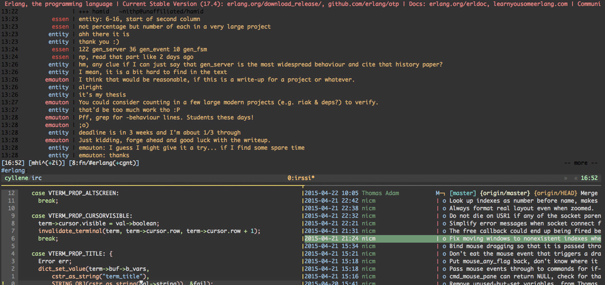

转载请注明出处：葡萄城官网，葡萄城为开发者提供专业的开发工具、解决方案和服务，赋能开发者。
原文出处：https://tutorialzine.com/2017/08/12-terminal-commands-every-web-developer-should-know
在开发者的弹药箱里，命令行是最具生产力的工具之一。掌握它们可以给你的工作流程带来非常积极的影响。因为，许多日常任务都可以用一条命令然后按回车来解决。
在本文中，我们为你准备了一系列常用命令，帮你充分利用你的终端。这其中有些命令是系统内置的，另外的一些则是需要另外安装的免费工具，不过这些免费工具是经历了时间的考验，所以你可以分分钟将他们安装完成。
curl是一个发送请求的命令行工具。可使用HTTP(s)、FTP，以及一些你可能从未听过的协议发送请求。它可以下载文件，检查响应头，自由地访问远程数据。
在web开发中，curl常用于测试连接和RESTful APIs。
# 获取一个URL的HTTP HEADER
curl -I http://google.com
HTTP/1.1 302 Found
Cache-Control: private
Content-Type: text/html; charset=UTF-8
Referrer-Policy: no-referrer
Location: http://www.google.com/?gfe_rd=cr&ei=0fCKWe6HCZTd8AfCoIWYBQ
Content-Length: 258
Date: Wed, 09 Aug 2017 11:24:01 GMT
# 向远程API发出GET请求
curl http://numbersapi.com/random/trivia
29 is the number of days it takes Saturn to orbit the Sun.
curl命令可以远比上面的情况复杂。它有一大堆的选项来控制请求头、cookies、权限验证等等。你可以在这本相当棒的免费书Everything curl中读到更多。
tree是一个小巧的命令行，用于可视化地展示目录里的文件结构。它递归地执行，检查嵌套的每一个层级，为所有内容绘制出格式化的树形结构。你可以用它快速浏览文件结构，定位到所需的文件。
tree
.
├── css
│ ├── bootstrap.css
│ ├── bootstrap.min.css
├── fonts
│ ├── glyphicons-halflings-regular.eot
│ ├── glyphicons-halflings-regular.svg
│ ├── glyphicons-halflings-regular.ttf
│ ├── glyphicons-halflings-regular.woff
│ └── glyphicons-halflings-regular.woff2
└── js
├── bootstrap.js
└── bootstrap.min.js
也有类似正则匹配的选项，用于过滤结果。
tree -P '*.min.*'
.
├── css
│ ├── bootstrap.min.css
├── fonts
└── js
└── bootstrap.min.js
根据维基百科所说，tmux是一个终端复用器，翻译为人话就是说，它是一个把多给终端连接为一个终端会话的工具。
一个tmux分为3块屏的终端如下：

它让你在终端中的程序间切换，添加分屏，并讲多个终端连接到同一个会话，并使之保持同步。尤其在远程服务器上工作时，tmux特别有用，因为它允许你无需再登录即可创建新的终端标签页。
du命令能生成有关文件和文件夹磁盘空间占用情况的报告。它非常易于使用，能递归地遍历每个子目录，并返回单个文件的大小。
一个du的常见用例是，你的磁盘空间不足了，而你不知道为啥。使用此命令，可快速看到每个文件夹占用了多少存储量，从而找到最占空间的那个东西。
# 运行此命令将显示当前目录中每个文件夹的空间占用情况。
# 使用 -h 命令选项将使报告更易读。
# -s 可防止递归并显示文件夹的总大小。
# 通配符（*），将在当前目录中的所有文件及文件夹上显示所有信息
du -sh *
1.2G Desktop
4.0K Documents
40G Downloads
4.0K Music
4.9M Pictures
844K Public
4.0K Templates
6.9M Videos
还有一个类似的命令行，叫做df(Disk Free)。与du相反的是，df返回的关于可用空间的许多信息。
Git是目前最流行的版本控制系统。 它是现代web开发所使用的最典型的工具之一，我们绝不能将它排除在本文的列表之外。
有许多关于git的第三方应用和工具，但大部分人还是倾向于使用命令行原生的git。git的命令行界面真的很强大，甚至足以处理最杂乱的项目历史。
如果你想学习关于git的更多知识，建议你查看我们的30分钟学会git的教程。
tar是处理文件打包的默认Unix工具。它让你快速地把多个文件打成一个包，这样之后存储和移动它们就会很方便。
tar -cf archive.tar file1 file2 file3
使用-x选项也可以解压缩.tar格式的包文件。
tar -xf archive.tar
请注意，大多数其他格式（如.zip和.rar）无法通过tar打开。它们需要其他命令行工具才行，比如unzip。
许多现代Unix系统上有tar的扩展版本（比如GNU tar），它也能进行文件压缩：
# 创建 gzip 压缩包.
tar -czf file.tar.gz inputfile1 inputfile2
# 解压 .gz 压缩包.
tar -xzf file.tar.gz
如果你的操作系统里没有那个版本的tar，你可以使用gzip，zcat或者compress来减少文件存档大小。
Unix里有几个内置的做hash运算的命令，包括md5sum，sha1sum以及其他。
这些命令行工具在编程中有各种应用，但最重要的是，它们可用于检查文件的完整性。
例如，如果您从不受信任的源下载了.iso文件，可能里面就包含有害脚本。 你可以从中生成md5或其他哈希，以此确保该.iso是安全的。
md5sum ubuntu-16.04.3-desktop-amd64.iso
0d9fe8e1ea408a5895cbbe3431989295 ubuntu-16.04.3-desktop-amd64.iso
然后，你就可以将本地生成的md5和原始作者提供的字符串相比较（比如UbuntuHashes）。
htop是比内置的top任务管理更强大的命令。它提供了一个高级版的接口，具有丰富的选项，用于监视和控制系统进程。
尽管运行在命令行，htop仍支持很好的鼠标控制。这让它更加容易地在菜单间导航、选择进程，以及通过排序和过滤来组织任务。
Unix中的Links就好比是Windnows里的快捷方式，它让你快速访问到某些文件。Links通过ln命令来创建。它可以有两种类型：hard和symbolic。每种类型都有不同的属性，用于不同的事务。（了解更多）
这里有许多你可以使用Links的例子。比如，我们在桌面有一个文件夹叫做Scripts，干净地放着ix我们常用的bash脚本。每当想调用这些脚本时，我们需要这么做：
~/Desktop/Scripts/git-scripts/git-cleanup
显然，每次输入此绝对路径，并不是很方便。相反，我们可以为Script文件夹在/usr/local/bin下创建一个symlink，这就让在所有目录下都可以执行Scripts里的脚本了。
sudo ln -s ~/Desktop/Scripts/git-scripts/git-cleanup /usr/local/bin/
有了创建好的symlink，我们现在可以打开任一个命令行窗口，然后直接通过脚本文件名执行它：
git-cleanup
使用ssh命令，用户可以快速连接到远程主机，并登录其Unix shell。 这使得我们可以方便地直接从本地计算机，向终端在服务器发出命令。
要建立连接，只需给出正确的ip地址或url。首次连接到新服务器时，将会有某种形式的身份验证。
ssh username@remote_host
如果要快速执行在服务器上的一些不需要登录的命令，你只需在url后添加命令即可。该命令将在服务器上运行，然后返回结果。
ssh username@remote_host ls /var/www
some-website.com
some-other-website.com
有很多ssh可做的事情，比如创建代理和隧道，使用私钥加密你的连接，传输文件等等。你可在这个指南里读到更多。
grep是标准的Unix工具，用于在文本中查找字符串。它以文件或流作为输入，让其内容跟正则表达式做运算，并返回所有匹配的行。
需要过滤大型文件时，此命令很实用。具体来讲就是，我们可以把grep和date命令一起使用，用来搜索大的日志文件，并生成只包含今天错误信息的新文件。
// 搜索今天的日期（格式为yyyy-mm-dd）并将结果写入新文件。
grep "$(date +"%Y-%m-%d")" all-errors-ever.log > today-errors.log
另一个很棒的、处理字符串的命令是sed。它比grep更强大（也更复杂），几乎可执行任何与字符串相关的任务，包括添加，删除或替换字符串。
许多Unix命令，包括本文提到的一些，在向它们添加所有选项后，往往变得很长。为让它们更好记，你可以使用内置的alias命令创建简短的别名：
# 创建用于启动本地Web服务器的别名。
alias server="python -m SimpleHTTPServer 9000"
# 不是键入整个命令只需使用别名。
server
Serving HTTP on 0.0.0.0 port 9000 ...
只要保持命令窗口打开，别名就保持有效。要使其长久被记住，你可以将alias命令添加到.bashrc文件中。
以上就是我这总结出的12个Web开发者应该了解的命令行，可能不是那么完整和全面，那么希望如果大家还了解什么命令或没有在文中提到的，也欢迎大家补充和讨论。